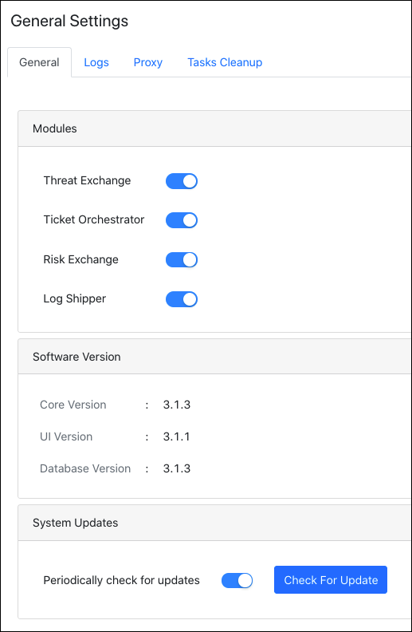
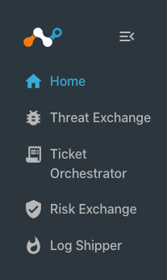
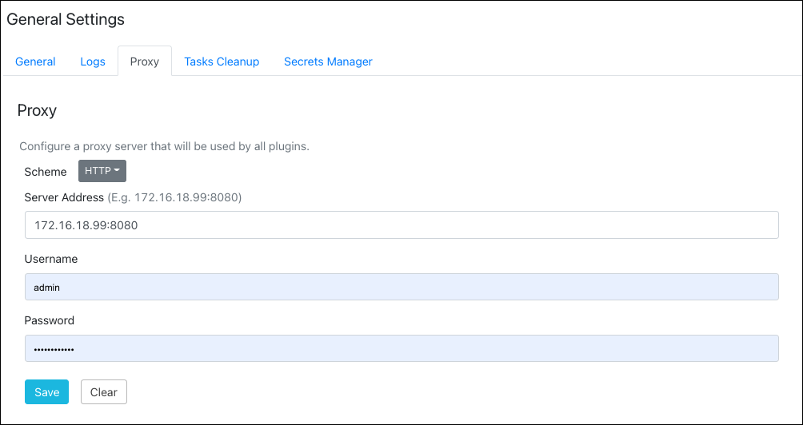
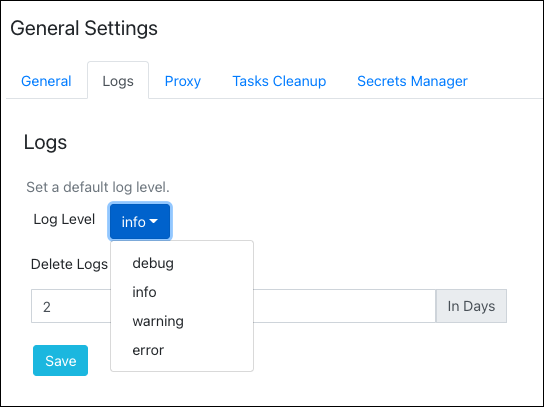

Get Started
These instructions are for the Admin only. This section describes the initial steps for getting started with Netskope Cloud Exchange after installation is complete.
Default User Login
By default, a single user is created with administrative capabilities with these credentials: Username: admin Password: admin
This user will have Administrator level access to the application. This user will have write access, and will be able to create new users as well.
On the first login, you will be required to change these credentials. After that, log in using your new credentials.
 |
Enable Modules
Upon successful login, enable the modules you want to use.
|  |
Enabled modules appear in the left panel.
|  |
Configure Proxy Settings
Each plugin configuration has an option to use this configured system proxy or not. Changes to Settings do not require a CE core restart.
Click Settings in the lower left panel.
Click General, and then Proxy.
 Enter your Proxy Server Address and Port. (Do not provide an HTTP scheme). In case of an authenticated proxy, make sure to supply the username and password.
Click Save.
Configure Log Level
You can set different log levels that apply to the entire platform. Three different log level options are available: Info, Warning, and Error. These are accessed by clicking Logging link in the lower left nav panel. Changes to Settings do not require a CE core restart.
Click Settings in the lower left panel.
Click General, and then Logs.
Select a log level value from the dropdown list.
 Click Save.